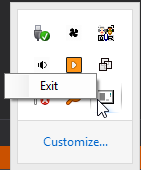
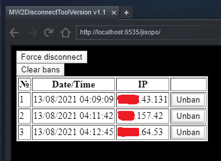

Об утилите
MW2 Disconnect Tool
Скачать(Прямая ссылка)
Исходный код: MW2DisconnectTool WFP
Для работы нужно:
winpcap
Возможности:
1) Отображение текущего хоста(сервера)
2) Отключение от сервера и возможность больше на него не попадать(в том числе если на сервере заблокирован выход в меню)
Часто задаваемые вопросы:
-> Что делает утилита?
Позволяет разорвать ваше соединение с текущим хостом(сервером), на котором вы в последний раз играли/играете сейчас. Будь то модифицированный сервер, играет ли на нём читер или вы просто хотите зайти на другой - роли не играет.
-> Как это работает?
Утилита смотрит трафик и по содержимому определяет кто является сервером и сохраняет его IP адрес(только последнего). Кнопка 'Force disconnect' добавляет IP адрес хоста(сервера) в чёрный список вашего фаервола. Принцип действия очень похож на любой другой фаервол. Сам сервер и игроки на нём продолжают играть, а у вас просходит обрыв связи с сервером и вы на него больше не попадаете.
-> В mw2sa были ограничение на использования, здесь они есть? Нужно где-то регистрироваться или запрашивать какой-либо доступ для использования программой?
Нет, никаких ограничений по использованию программы нет. Она работает полностью автономно(без доступа к сторонним сервисам) и без каких либо ограничений на количество заблокированных хостов или времени их блокировки. После скачивания ей можно сразу пользоваться, никакой дополнительной регистрации не нужно.
Случая когда сервисы mw2sa перестали работать и программа перестала функционировать случиться не может.
-> За это могут забанить? Могу ли я получить за неё VAC бан?
Нет. Утилита работает по принципу любого другого фаервола/брандмаузера и никак не вмешивается в процесс игры. Если вы посмотрите трафик игры через любые другие утилиты(wireshark или любой фаервол) и заблокируете IP адрес хоста то это будет тоже самое что делает эта утилита.
-> В случае mw2sa для работы нужно быть сервером, а у меня закрытый/ограниченный тип доступа к сети(nat). Утилита будет работать?
Да, будет. Тип доступа к сети не влияет на работу и сервером быть не нужно.
-> Зачем программе права администратора?
1) Для добавления правила на блокировку IP адреса в систему, программа использует встроенные в windows средства блокировки(WFP - Windows Filtering Platrofm). Без прав администратора добавить правило для блокировки она не сможет.
2) Права администраторы нужны для захвата трафика с адаптера для определения текущего хоста(для этого нужен winpcap).
-> Что нужно чтобы утилита правильно работала?
1) .Net framework версии не ниже версии 4.5.2. На ОС win 10 более новая версия уже будет установлена, а на более старой скачать .net framework 4.5.2 брать тут или тут.
2) Установленный в системе драйвер winpcap, брать тут или тут.
3) Запущенный сервис BFE. Base Filtering Engine.
Служба базовой фильтрации (BFE) представляет собой службу, которая управляет политиками брандмауэра и политиками IP-безопасности (IPsec), применяя фильтрацию пользовательских режимов. Остановка или отключение службы BFE значительно снижает уровень безопасности системы. Это также приводит к непредсказуемым действиям при управлении IPsec и работе приложений брандмауэра.
Проще говоря без запущенной службы BFE блокировка связи с сервером не сработает.
-> Как ей правильно пользоваться?
Распаковать всё из архива в любое место.
После запуска, главного окна программы не будет. Иконка будет находится сразу в системном трее(программу по умолчанию запускается в свёрнутом режиме).
Всё взаимодействие с программой происходит через браузер по ссылке(ссылка также находится на главном окне программы):
http://localhost:6535/jisopo/
Хитрость:
-> Ссылку можно сделать стартовой страницей по умолчанию в веб браузере стима чтобы не копировать её каждый раз. Стим может криво работать со ссылкой и подставить www перед адресом. В этом случае воспользуйтесь второй ссылкой.Зайти в интерфейс программы(на главную форму) можно нажав на иконку в трее.
Использовать кнопку 'Force disconnect' можно в любое время. Сразу после захода на сервер и не выходя из него(будет выглядеть как обрыв связи, все передвижения на карте остановятся) или зайдя на сервер,увидев что он модифицированный и выйдя из него и только потом нажав 'Force disconnect'. Утилиту желательно запускать перед запуском игры.
-> На сколько сохраняются баны?
Баны активны до нажатия кнопки 'Clear bans'. Также все баны автоматически удаляются при: корректном завершении программы(если не закрывать через диспетчер задач принудительно), перезагрузке системы. Если программа была завершена некорректно просто сделайте перезагрузку компьютера.
-> Как часто мне надо будет блокировать у себя модифицированные сервера?
Программа блокирует сервер только по IP адресу, про SteamID профиль игрока она ничего не знает. Это значит что блокировать хостов нужно будет каждый игровой сеанс(до следующего запуска программы или перезагрузки системы).
Скриншоты интерфейса программы:
Вид в системном трее:

Главное окно(основная форма):
Веб-интерфейс(доступ через браузер):

About Me
You are allowed to modify and use this HTML template for your personal or business websites.
You are NOT allowed to re-distribute this template file on your site for any reason. Thank you.
Next
Thoughtful Goliath
When Goliath comes out, you should run.
View more
Pretty Girl Picture
Vivamus feugiat, neque sed.
View more
A bunch of Red Flower
Integer pellentesque nisi iaculis sapien.
View more
Thoughtful Goliath
When Goliath comes out, you should run.
View more
Thoughtful Goliath
When Goliath comes out, you should run.
View more
Thoughtful Goliath
When Goliath comes out, you should run.
View moreThoughtful Goliath
When Goliath comes out, you should run.
View more{kind=link}

Thoughtful Goliath
When Goliath comes out, you should run.
View more
Thoughtful Goliath
When Goliath comes out, you should run.
View more
Thoughtful Goliath
When Goliath comes out, you should run.
View more
Thoughtful Goliath
When Goliath comes out, you should run.
View more
Thoughtful Goliath
When Goliath comes out, you should run.
View more